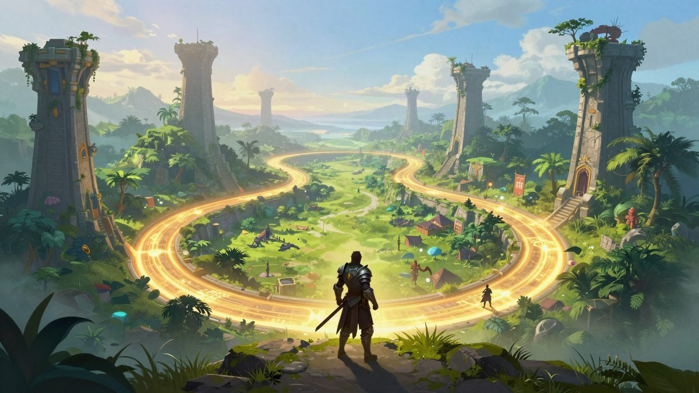

League of Legends: New Dawn stiže iduće godine s novim clientom i obnovljenim Summoner's Riftom

Riot Games je na svjetskom prvenstvu najavio League of Legends: New Dawn, najveće ažuriranje igre u njezinih 17 godina. Donosi novi client, vizualno obnovljen Summoner's Rift i nove načine igranja, a puna objava planirana je za siječanj 2027.
Riot Games je tijekom svjetskog prvenstva League of Legends 2026. najavio League of Legends: New Dawn, novu veliku fazu razvoja MOBA igre koja izlazi iduće godine. Riot ga opisuje kao opsežno ažuriranje 17 godina stare igre, koje obuhvaća gameplay, client i niz drugih dijelova. Puna objava planirana je za siječanj 2027.
Novi client i obnovljeni Summoner's Rift
Executive producer Paul Bellezza rekao je da client mora biti bolji, pa će iduće godine izaći modernizirani client. Riot je arhitekturu igre zadnji put temeljito mijenjao prije deset godina, 2016. godine.
Senior vice president i voditelj studija Andrei van Roon dodao je da jedan client nije dovoljan: "Puno toga mijenjamo." Kaže da New Dawn vizualno obnavlja Summoner's Rift, razvija gameplay te donosi nove načine igranja i doživljaja omiljenih championa.
Dugoročni plan
Van Roon je poručio da Riot želi da League izdrži test vremena i bude igra koja će postojati još dugo. Za to, dodaje, mora biti ispunjeno mnogo uvjeta, ali ih nije detaljnije naveo.
Riot je u najavi pokazao isječke gameplaya i filmske kadrove nekoliko championa: Riven, Ahri, Jhin, Sett, Poppy, Lux, Blitzcrank, Leona i Volibear.
Što još nije poznato
Detalja za sada ima malo. Riot nije objavio što točno mijenja u gameplayu ni kako će izgledati novi načini igranja. Više informacija očekuje se na punoj objavi u siječnju 2027.
Izvor: GamesRadar